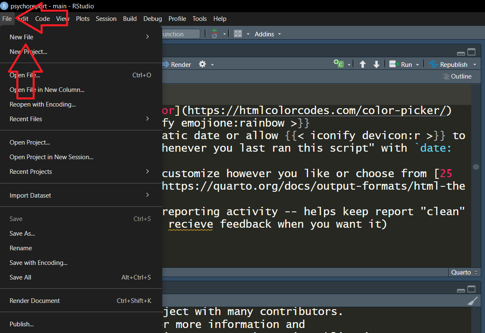
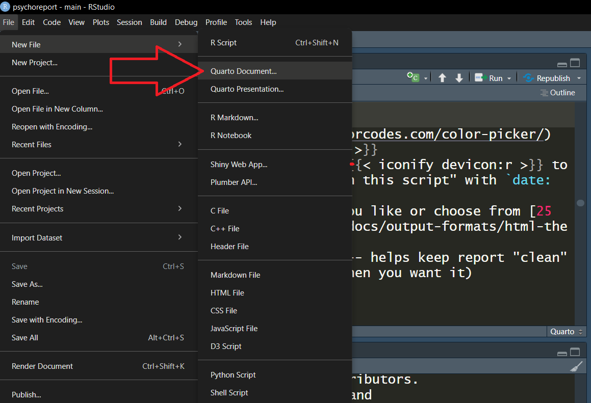
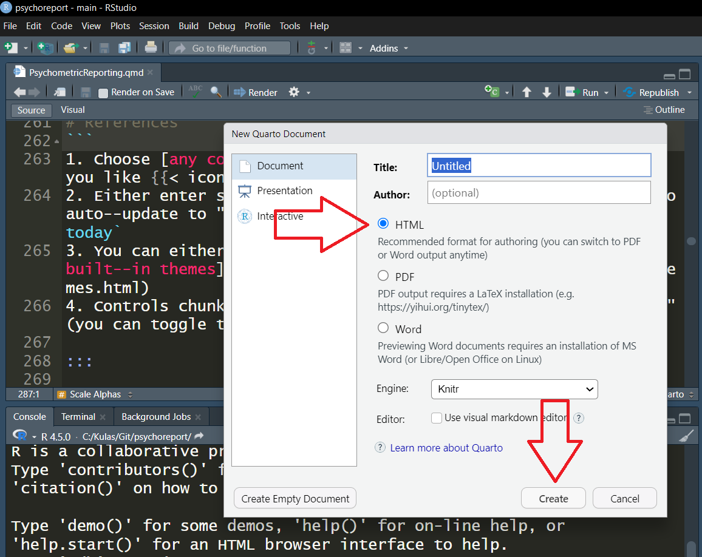
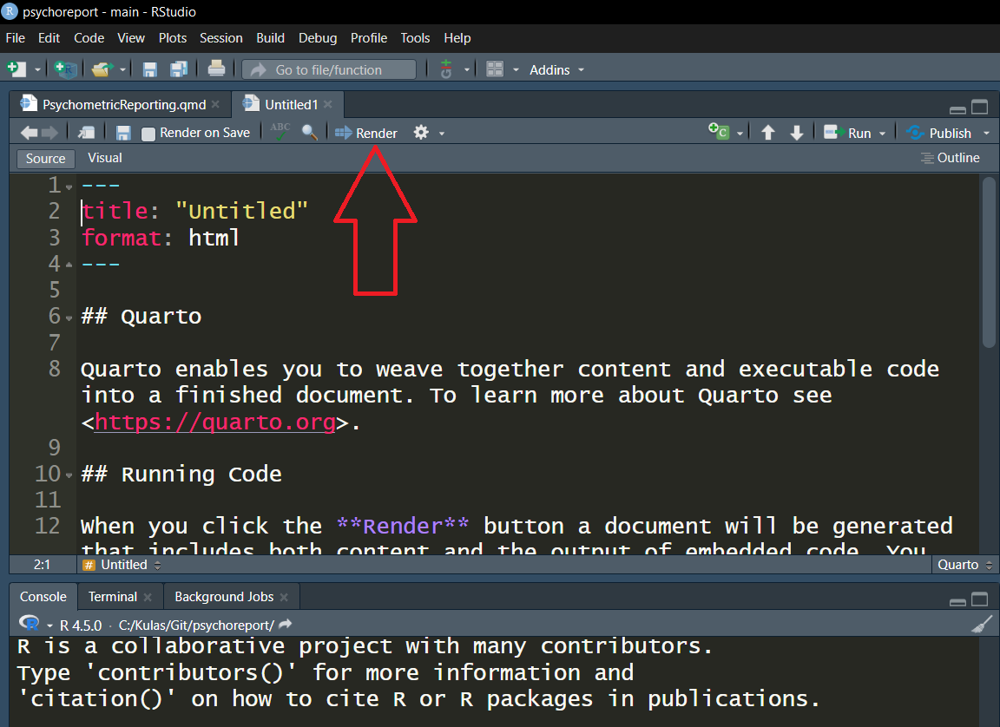

- 1
-
any
command you would normally specify within scripts or the console is valid within code chunks (including the loading of packages) - 2
-
comments
also operational within code chunks
Psychometric Reporting…
Report Formats


Let’s build a tech report!!!

Build Components (Today)
- Table of Contents
- Template
- Psychometric content:
- Cross–references
- Bibliography

Empty Report Shell
- Create a boilerplate Quarto html document:
FileNew FileQuarto DocumentHTMLCreate
2. Verify everything “works” – render/save within project folder
3. Use clipboard (
---
title: "SCSU 2025 Psychometrics Report"
author: "I.M. Ah--sum"
title-block-banner: "#4caad8"
date: today
format:
html:
theme:
light: default
dark: darkly
toc: true
toc-location: left
execute:
echo: false
warning: false
message: false
#bibliography: bib.bib
#csl: apa7.csl
---
```{r, setup}
#| output: false
options(repos = "https://cloud.r-project.org") ## b/c Quarto
install.packages("psych") ## access bfi data & alpha function
```
# Introduction
::: {style="overflow: auto;"}
[{style="float: right; margin-left: 1em; width: 40%;"}](https://www.stcloudstate.edu/graduate/io-psy/default.aspx)
This report summarizes responses from...
>Note: any caveats here
:::
# Method
## Participants {#sec-people}
## Materials
# Results
# Conclusions & Summary
## Future considerations
## Limitations
# References- 1
-
Choose any color you like
- 2
-
Either enter static date or allow
to auto–update to “whenever you last ran this script” with date: today - 3
- You can either customize however you like or choose from 25 built–in themes
- 4
- Controls chunk reporting activity – helps keep report “clean” (you can toggle to recieve feedback when you want it)

   
Build Component Status:
- Table of Contents
- Template
- Psychometric content:
- Cross–references
- Bibliography
Build Component Status:
- Table of Contents
- Template
- Psychometric content:
- Cross–references
- Bibliography
Build Component Status:
- Table of Contents
- Template
- Psychometric content:
- Cross–references
- Bibliography
Build Component Status:
- Table of Contents
- Template
- Psychometric content:
- Cross–references
- Bibliography
Build Component Status:
- Table of Contents
- Template
- Psychometric content:
- Cross–references
- Bibliography
Keep in Touch